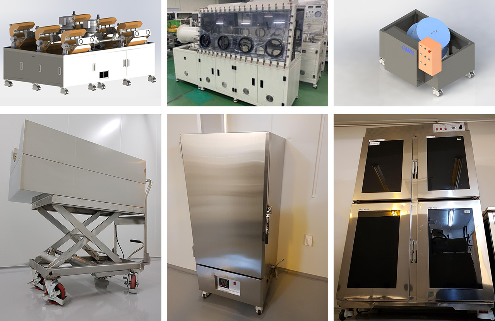

기타 장비 및 악세사리
기타 장비 및 악세사리
우리 (주)CMDL 에서는 전자재료를 생산함에 있어 필요한
여러가지 장비 및 악세사리가 준비되어 있습니다.
우리 (주)CMDL 에서는 전자재료를 생산함에 있어 필요한 여러가지 장비 및 악세사리가 준비되어 있습니다.
시료의 안정성을 평가하는 열 안정성 장비, 물질을 혼합하는데 필요한 혼합기, 고객의 요구에 따라 입자 사이즈를 조절하는
디스크밀, 납품형태에 따라 성형 가능한 성형 디스크, 기타 승화정제시 필요한 튜브 케리어, 오븐, 데시게이터 등 여러가지 장비가 구비되어 있습니다.